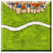
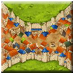
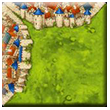
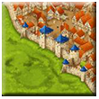

カルカソンヌは Klaus-Jürgen Wrede がデザインし、ドイツの Hans im Glück により製品化されました。
- 独国判: © 2000, 2024 Hans im Glück Verlags-GmbH
- 米国版: © 2012, 2024 Z-Man Games
- 日本版: © 2001, 2024 メビウスゲームズ
本テキストは大山貢 (インターネットニックネーム OrzBruford) により作成されました。また、この試案を作成するに当たり以下の文書、サイトを参考にし、また内容を継承しています。先人の知恵、努力に感謝します。
-
はじめに
本稿の基本ゲームルールはトーナメントルールに準じるものとし、草原ルールが含まれ、Abbot 拡張ルールと The River 拡張ルールは含まないるものとする。その他の拡張のルールも含まないものとする。
またタイルの記述は Carcassone Central ならびに Wikicarpedia を継承するものとし、記載方法の定めがないか、もしくはそれが必須であると思われる場合に限り、最低限の拡張を行うものとする。
なお本稿は英語や横書き日本語のように左から右に向けて文字を書く文化を前提とする。
-
棋譜全体の構成
棋譜は以下で構成される。
-
ゲーム情報
以下をコンマで区切って列記する。
- 試合日:
- 開始時刻をロケール付きで指定する。例えば、13:01 JST、04:01 UTC、あるいは 21:01 MST
- ゲームの種類:
-
- Simple
- BGA Arena
- BGA 2022x12 April
- Asmodee 2024x08 March
- WTCOC 2022 3rd Round
- UKGE 2022 Group stage
- 2024 Japan Championship Finals
- ゲームモード:
-
- Turn-based
- Real-time
-
プレイヤー情報:
プレーヤーは、プレイ順に 1 行に 1 つずつ、次の情報で識別される。
- “A” で始まり、その後に “=” が続くプレイヤー ID
- BGA ID または Asmodee Connect ID、あるいはニックネーム等
- オプション: () 括弧内の実名
- オプション: [] 括弧内の国名
- オプション: <> 括弧内のミープルカラー
例:
- 一般的な 2 プレイヤー ゲーム:
-
- A = wallaceprime (Chris Wallace) <yellow>
- B = Riesemax <black>
- WTCOC 2 プレーヤー ゲーム:
-
- A = wallaceprime (Chris Wallace) [UK]
- B = isloun [RCP]
- 一般的な 4 人用ゲーム:
-
- A = danisthirty
- B = wallaceprime
- C = Corelli
- D = ted the notty bear
-
プレイログ
以下の順序で 1 手ずつ記録する。
- 手番番号:
1 から始まり 71 を最大数とする手番を表す連番。
- プレイヤー記号
A, B, C などのプレイヤーを示す記号。プレイヤー情報を参照。
- タイルX座標
スタートタイルの位置を X=0 としたときの記譜者から見た相対的な横位置。スタートタイルより左に置かれたタイルの X 座標は負の値となる。
- タイルY座標
スタートタイルの位置を Y=0 としたときの記譜者から見た相対的な縦位置。スタートタイルより下に置かれたタイルの Y 座標は負の値となる。
- タイルデザインとミープルの状態
-
- 地形の記号
-
- C: 都市 (City)
- R: 道路 (Road)
- F: 草原 (Field)
- ミープル関連記号
-
- m: 都市と道路のミープル
- M: 草原のミープル
- k: 修道院 (Monk: 修行僧) のミープル
- タイルデザインの記述方法
-
タイルのデザインの記述は Carcassone Central ならびに Wikicarpedia における略記法を採用し、12 時の方向から時計回りに地形の略号を記述するものとする。
例 (カッコ内赤は拡張記載案):
RFRF
FFRR
FRRR
RRRR
CFFF
CRFR
CFRR
CRRF
CRRR
FCFC
(2F1C)FCFCE ※1
(2F1CE ※1)CFCF
(2C1F)CFFC
(CFFC^)CCFF
CRRC
CCFC
CCRC
CCCCE ※1

FFFF
FFRF
- ※1: エンブレム付きタイルには末尾に E を追記する。
- ※2: CFFC^: ^ はタイルの角のイメージ
- タイルの向きの表現
-
タイルの向きは以下の方法のいずれかを採用し、1 つの棋譜に置いてそれぞれの記法を混在させてはならない。
-
タイルの向きを表現するのにタイルの向きによりタイルの 12 時の方向の地形が変わるのであれば、その地形をタイルデザインのスタート記号とすることができる。
例えば、スタートタイルが -90 度回転している場合は CRFR ではなく RFRC と記述しても良い。
-
もうひとつのタイルデザインをの向きを表現する方法として、タイルデザイン表現は変更せず、タイルの回転角度を付加してタイルの向きを表現しても良い。
スタートタイルが -90 度回転させられている場合は CRFR(-90) と記述しても良い。また CRFR(270) と記述しても良い。
上記の例のように -90 度と 270 度は同じ回転角度を表すが、1 つの棋譜内ではどちらかに統一しなければならない。
-
- タイル上のミープルの表現
-
ミープルは確保する地形の記号のすぐ後ろに記述する。
例:
- スタートタイルの都市に一辺都市の都市をつなげてタイルを配置し、ミープルを完成した都市上に置いた場合 FFCmF、あるいは CmFFF(+180) のように記述する。
- ストレートタイルをプレイし道路の上にミープルを置いた場合、連続する道路の記号のすぐ跡に FRRmF と記述する。
- 三辺都市を 90 度傾けてプレイし、草原にミープルを置いた場合 CCCFM または CCFMC(+90) のように記述する。
- 道なし修道院タイルをプレイし、修道院にミープルを置いた場合 FFFFk のように記述する。
- 道有り修道院タイルを -90 度回転させてプレイし、道にミープルを置いた場合 FRkFF または FFRkF(-90) のように記述する。
- 得点
-
得点は +C+R+Mで記載する。対戦相手のプレイによる得点には “+” の代わりに “*” をつける。得点がない地形は “+0” と記載する。
- C: City による得点
- R: Road による得点
- M: Monastery による得点
- コメント
棋譜内容をわかりやすくするためのコメントを自由記述する。コメントの記法は 7. コメントを参照。
-
最終得点計算
以下の書式で記述する。得点がない地形は “+0” と記載する。
Final Scoring: +C+R+M+F
- C: City による得点
- R: Road による得点
- M: Monastery による得点
- F: Field による得点
-
コメント
コメントはコメント記号 “//” で始まる任意の文字列。
“//” より右側に書かれる文字は全てコメントとして扱う。
行頭にコメント記号 “//” がある場合、行全体がコメントとして扱われる。
-
付録 A
本稿をまとめながら、テキストによる棋譜記載方法の仕様策定作業と、情報システムに置ける通信プロトコルの設計、DB レコード設計との類似性に気づくこととなった。
棋譜データとして json や XML などのフォーマットを利用し、ソフトウェア間でデータ通信することにより、カルカソンヌのリアルタイム・リモート対戦実装が割と容易に実現できるのではないかという考えに至った (BGA バージョンは Web アプリであることから、そのように実装されているのではないかと推察する)。
Nostr プロトコルを採用するのであれば、専用リレー・サーバを用意しさえすれば、ほぼサーバーサイドのコードを書くことなくシステムができてしまう。
私個人でのシステム開発となると自分の年齢を鑑みて荷が重いと判断し、実際の実装については今後の才能ある若い人たちに委ねたい。
13 Mar, 2024
文責: 大山貢 (OrzBruford)